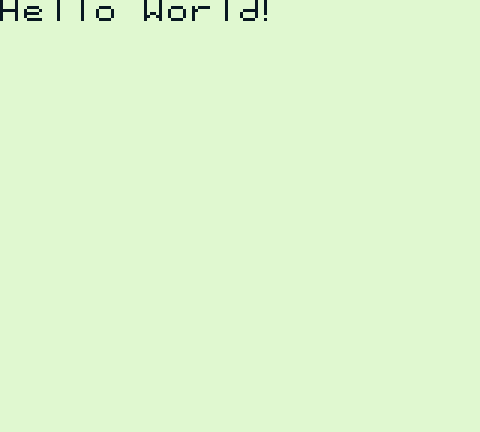

Hello World!
This is the moment everyone has been longing for. It's time to build our first Game Boy ROM! And it's going to print "Hello World" on the screen, what joy!
Be careful; the goal here is only to get a ROM up and running, not to do it properly. As such, we're going to take a lot of shortcuts that you should NOT take when making actual projects.
Setting up
First, ensure that RGBDS is installed on your machine.
Begin the work by creating a directory, anywhere. Call it whatever you want, but hello-world-gb is probably a good pick. Then go into that directory; this is the root of our project. (Everything we'll do will happen inside of the directory.)
Then, download this file (right-click, Save As) and save it as hardware.inc in our project's directory. This file contains a lot of definitions that will cut us some work, and standardize the names of the IO registers.
For the font used in this example, download this file (again, right-click, Save As...) and save it as font.chr in the project's directory.
Now, create a file, and call it, say, main.asm. We will write all our code in there, starting with the following line: INCLUDE "hardware.inc". When RGBASM reads this, it will parse hardware.inc's contents, letting us use all the neat definitions that it contains.
And now we can actually start writing our own code. Phew!
The header
Code and data go into sections. A section is a "block" with cohesive contents. For example, we're going to create a section with our header. Here's what your main.asm should be looking like:
INCLUDE "hardware.inc"
SECTION "Header", ROM0[$100]
; Our code here
Let's analyze the section declaration. First is the keyword SECTION. Then is the section's name, "Header"; it doesn't matter a lot, but two sections with the same name are not allowed. Ideally, give a section a descriptive name. Then is a comma, followed by the memory type. We'll stick to ROM0 for now. After that is, optionally, the address where the section must be placed. Since execution begins at $100, we have to place this section there.
To be more precise, execution begins at $100, and the header begins at $104. This leaves us 4 bytes of code, and we'll choose the following:
SECTION "Header", ROM0[$100] ; I'm repeating this line so you know where we are. Don't write it twice!
EntryPoint: ; This is where execution begins
di ; Disable interrupts. That way we can avoid dealing with them, especially since we didn't talk about them yet :p
jp Start ; Leave this tiny space
Then comes the header, which spans $104 to $14F. We don't have to care about the header, since rgbfix handles it for us. We simply need to put zeros there.
jp Start ; Again, I'm repeating this line, but you shouldn't
REPT $150 - $104
db 0
ENDR
Don't worry about REPT, we'll discuss it later.
Getting over to it
And now we can write the game code! Since it doesn't have any relation with the header, we'll write a new section. You can place it anywhere in main.asm, although I recommend placing it after the header.
ENDR ; Again, I'm repeating this for the sake of clarity, and to give you some pointers as to how to space stuff. Don't write it twice. SECTION "Game code", ROM0
Since we have no need to place this code at a specific location, we don't ask RGBDS to. That way, it can fit the code in more compact ways, which is to our benefit. Now, let's think about what we need to do. We need to copy the font data to VRAM, and then display the string we all know and love. Plus some extra setup, I guess. But to do that, we need to access VRAM, and thus turn off the LCD. How do we do that? Well, we simply need to reset bit 7 of LCDC. But there's a catch: it must be done during VBlank!
SECTION "Game code", ROM0
Start:
; Turn off the LCD
.waitVBlank
ld a, [rLY]
cp 144 ; Check if the LCD is past VBlank
jr c, .waitVBlank
xor a ; ld a, 0 ; We only need to reset a value with bit 7 reset, but 0 does the job
ld [rLCDC], a ; We will have to write to LCDC again later, so it's not a bother, really.
Small note about the xor a ; ld a, 0 line: I recommend putting the equivalent instruction in a comment when taking shortcuts, just to be clear. Though, xor a is a common enough shortcut that I find it unnecessary for that specific instruction, but that's to taste.
Now, the LCD is turned off, so we can access VRAM all we like. First, we will copy the font to VRAM.
ld [rLCDC], a
ld hl, $9000
ld de, FontTiles
ld bc, FontTilesEnd - FontTiles
.copyFont
ld a, [de] ; Grab 1 byte from the source
ld [hli], a ; Place it at the destination, incrementing hl
inc de ; Move to next byte
dec bc ; Decrement count
ld a, b ; Check if count is 0, since `dec bc` doesn't update flags
or c
jr nz, .copyFont
Let's explain the ld a, b ; or c lines (NB: it may be confusing, but when talking about multiple lines, they're often separarated by a semicolon). This sets the Z flag if and only if BC == 0. If BC == 0, then B = 0 and C = 0, which means that A == 0 after the or c. However, if BC != 0, then either B != 0 or C != 0, which means that at least one bit of B or C is set, and therefore A != 0 after the or c.
You may be worried that we haven't defined Font nor FontEnd yet, and that I didn't explain how tiles are encoded yet. Worry not, I will provide a ready-to-be-copied font later.
Now that we have the font ready, we just need to write to the tilemap. Luckily, we will just have to copy the string, at least in this paticular setup.
jr nz, .copyFont
ld hl, $9800 ; This will print the string at the top-left corner of the screen
ld de, HelloWorldStr
.copyString
ld a, [de]
ld [hli], a
inc de
and a ; Check if the byte we just copied is zero
jr nz, .copyString ; Continue if it's not
The reason why the loop is different here is that instead of copying a fixed length, we're copying "until a certain byte" (most commonly either 0 or $FF). This is especially useful for text, but works with basically anything.
Final setup
Now, all that's left is set a few registers and turn the screen on. We need to set the palette (%11100100 is a good pick), set the scroll registers, and also turn sound off (we'll skip the details, just write 0 to NR52). To turn the screen on, we need to set bit 7 of LCDC. But to get the background to display as well, we need to also set bit 0 of LCDC.
jr nz, .copyString
; Init display registers
ld a, %11100100
ld [rBGP], a
xor a ; ld a, 0
ld [rSCY], a
ld [rSCX], a
; Shut sound down
ld [rNR52], a
; Turn screen on, display background
ld a, %10000001
ld [rLCDC], a
Now, we've done everything we needed to do. But that doesn't mean we're done! Becaue the CPU will keep running after all of this. To avoid any issues, we can trap it into an infinite loop:
ld [rLCDC], a
; Lock up
.lockup
jr .lockup
Defining data
Ok, we're almost done. All the code is in place, we just need to give the program the font and the Hello World string. Remember the font file you downloaded during setup? Here's how to use it:
jr .lockup
SECTION "Font", ROM0
FontTiles:
INCBIN "font.chr"
FontTilesEnd:
INCBIN makes RGBDS copy the file's contents directly into the produced ROM. Alright, all that's remaining is the string!
FontTilesEnd:
SECTION "Hello World string", ROM0
HelloWorldStr:
db "Hello World!", 0
db tells RGBASM to place some bytes of data (similarly, there's dw for 16-bit words, and dl for 32-bit longs). With db, you can also use strings, which are automatically encoded, by default using ASCII. The 0 at the end tells the copy function to stop.
Action!
We now have something that should work! But we have to compile it. Open a command prompt in the project's directory, and type this: rgbasm -o main.o main.asm. This should create a file called main.o in the directory, and produce no errors. Then, type rgblink -o hello-world.gb main.o, which shouldn't give any errors either, and produce a file called hello-world.gb. You may be tempted to launch it right away, but this ROM still needs to be touched up. To do that, type rgbfix -v -p 0 hello-world.gb, and now you can run the ROM!
Here's what you should get:
Damn. Is it over yet?
Sadly, no! We're far, far from having finished learning about the Game Boy. We didn't even finish the proper basics; but at least you know enough to build some Game Boy ROMs. You can, if you want, take a break to let all of that sink in. Re-read these lessons, even; what we saw here are the foundation of everything else.
I also hope that this section has given you an appreciation of how much ASM is verbose. As you noticed, even a Hello World is not trivial to write (partially because on the Game Boy, there's nothing like print(), so we had to deal with graphics directly...). As frightful as that may sound, it has two upsides:
one, you have raw and full control over basically everything, which lets you run the beast at full power if you so desire (...not that there's a lot of power, but erm, anyways);
second, you will be dealing exclusively with your code, unless you choose to include other people's code. This means that you shouldn't have to worry about compatibility and interfacing with other stuff.